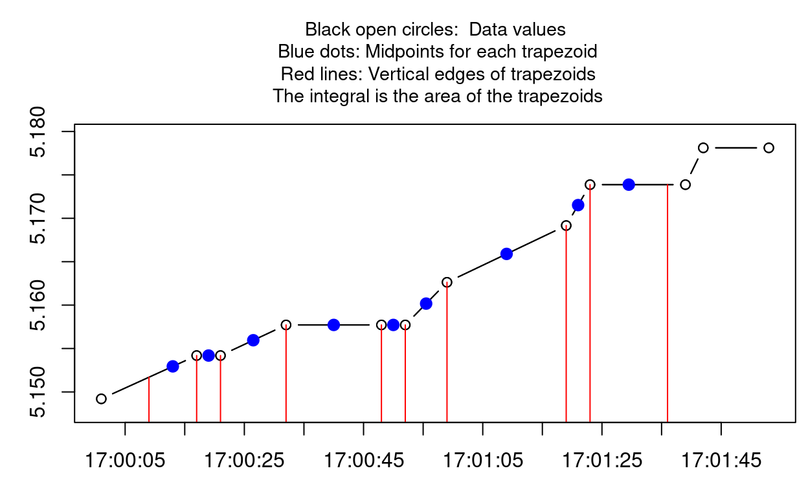

The Smisc package is a collection of functions for statistical computing and data manipulation that I created to facilitate my day-to-day work in R. Each function operates (more or less) on its own, designed for a specific task. As such, there are very few classes or methods in the package.
I have organized the documentation into 11 groups of functions that have similar themes. I provide below a brief synopsis of the motivation for each of the functions in the package, leaving the details to the standard help files, which you can find by following the bold blue links.
—Landon Sego
Before you get started, the source code of the Smisc package contains C code that requires compilation:
Then, installation is made easy with devtools:
# If devtools is not already installed
install.packages("devtools")
devtools::install_github("pnnl/Smisc")Now load the package as usual:
library(Smisc)I always found it a bit annoying how load() places the object(s) in the .Rdata file into .GlobalEnv without immediately telling you what the name(s) of the object is (are). loadObject() makes it easy to assign the contents of the .Rdata file to an object of my choice, like this:
myName <- loadObject("~/aDir/aFile.Rdata")And thus myName contains the contents aFile.Rdata.
dataIn() provides a flexible way to ingest data into R. It takes a single argument that can be the filename of an .Rdata or .csv file, a package dataset, or an existing data frame. It returns a data frame. Each of these, in principle, would achieve the same result, regardless of the format of the input data:
# Read a csv file
d <- dataIn("someData.csv")
# Load a .Rdata file
d <- dataIn("someData.Rdata")
# If the dataframe already exists as "someData"
d <- dataIn(someData)
# If "someData" is in the package "somePackage"
d <- dataIn("somePackage::someData")Sometimes it’s handy to know whether all the elements in a given row (or column) of a matrix or data frame are missing. allMissing() returns a logical vector indicating whether all the elements in a row (or column) are missing. It’s a nice compliment to complete.cases().
# A dataframe with a missing column
m <- data.frame(A = rnorm(3), B = NA, C = letters[3])
m A B C
1 -1.2070657 NA c
2 0.2774292 NA c
3 1.0844412 NA callMissing(m, byRow = FALSE) A B C
FALSE TRUE FALSE dframeEquiv() compares two data frames (or two matrices) and determines whether they are equivalent or how they differ.
# Create two slightly different data frames
d1 <- data.frame(A = 1:2, B = c("a", "b"))
d2 <- data.frame(A = 1:2, B = c("a", "c"))
# Compare the dataframes
compare <- dframeEquiv(d1, d2)75% of the elements of 'd1' and 'd2' are equivalent.We can see the locations by index where the dataframes differ:
compare$loc.inequiv row.loc col.loc
1 2 2And we can see a logical matrix indicating where they differ:
compare$equiv.matrix [,1] [,2]
[1,] TRUE TRUE
[2,] TRUE FALSEHave you ever needed to row bind, rbind(), or column bind, cbind(), or combine/concatenate, c(), numerous objects, usually of the same type? If you do it iteratively, you’ll slow your machine to a crawl:
# The names of the 100 matrices, m1, m2, ..., m100
mNames <- paste("m", 1:100, sep = "")
# Initialize the combined object
combined <- NULL
# Now wait forever
for (m in mNames) {
combined <- rbind(combined, get(m))
}qbind() provides a syntactically simple and fast solution:
# The names of the 100 matrices, m1, m2, ..., m100
mNames <- paste("m", 1:100)
# Now combined using `rbind()`
combined <- qbind(mNames, type = "row")Have you ever needed to row bind multiple matrices together that didn’t all have the same column names? smartRbindMat() function rapidly row binds them together by creating a final matrix with the union of the columns of the source matrices.
x <- as.matrix(data.frame(a = 1:2, b = 3:4))
y <- as.matrix(data.frame(a = 1:2, c = 5:6))
z <- as.matrix(data.frame(b = 7:8, d = 9:10))
smartRbindMat(x, y, z) a b c d
[1,] 1 3 NA NA
[2,] 2 4 NA NA
[3,] 1 NA 5 NA
[4,] 2 NA 6 NA
[5,] NA 7 NA 9
[6,] NA 8 NA 10Have you ever selected a single row or column from a dataframe or matrix only to have R return an object structured in a way you weren’t expecting? select() makes R’s behavior consistent, always returning a matrix or dataframe with a single row or column, if necessary. It is especially useful in the situation where the number of rows or columns to be selected is variable and not necessarily known before hand.
# A simple dataframe
x <- data.frame(a = 1:2, b = 3:4)
# If we select a single column the usual way, we get a vector:
x[,1][1] 1 2# But if we use select(), we get a single column dataframe
select(x, 1) a
1 1
2 2sortDF() provides a simple interface for sorting a dataframe by as many variables as you like, using a formula-style argument to indicate whether the variables are sorted in increasing or decreasing order.
d1 <- data.frame(A = 2:1, B = c("a", "b"))
# Sort by A
sortDF(d1, ~ A) A B
2 1 b
1 2 a# Sort by descending B
sortDF(d1, ~ -B) A B
2 1 b
1 2 a# Sort by A and B
sortDF(d1, ~ A + B) A B
2 1 b
1 2 aThe longer I program in R, the more I use lists–especially for parallelized computations. This often requires converting lists to dataframes, dataframes to lists, or breaking a list apart and storing the elements as separate objects.
df2list() converts a dataframe to a list, in a row-wise fashion (as opposed to as.list(), which converts in a column-wise fashion):
d <- data.frame(a = 1:2, b = letters[1:2])
d a b
1 1 a
2 2 bdf2list(d)$`1`
$`1`$a
[1] 1
$`1`$b
[1] a
Levels: a b
$`2`
$`2`$a
[1] 2
$`2`$b
[1] b
Levels: a bI use list2df() probably more than any other Smisc function. It converts a list of suitable object types (vectors, dataframes, or lists) into a single dataframe. It’s especially useful for collecting the output from strsplit(), or the results from lapply().
z <- list(a = c(first = 10, second = 12), b = c(first = 15, second = 17))
z$a
first second
10 12
$b
first second
15 17 list2df(z) first second
a 10 12
b 15 17On occasion, it is useful to break a list into its separate elements and not have to refer to them using the list name. sepList() makes it easy:
# A simple list that we'll separate
aList <- list(x1 = 10, x2 = "a")
sepList(aList)
# 'x1' is now in the Global environment:
x1[1] 10# And so is 'x2'
x2[1] "a"Managing factors in R is a regular chore. factor2character() and factor2numeric() make that easier. I also added a somewhat related function to this group, as.numericSilent(), because I wasn’t sure where else to put it.
When creating a dataframe, the default behavior of R is to render all character variables as factors—which you may not want. factor2character() will convert all the factor variables in a dataframe to character.
myData <- data.frame(x = 10, y = "a", z = "b")
str(myData)'data.frame': 1 obs. of 3 variables:
$ x: num 10
$ y: Factor w/ 1 level "a": 1
$ z: Factor w/ 1 level "b": 1myData1 <- factor2character(myData)
str(myData1)'data.frame': 1 obs. of 3 variables:
$ x: num 10
$ y: chr "a"
$ z: chr "b"Naively attempting to convert a factor to a numeric vector can easily go wrong. For example, as.numeric() probably won’t give you what you’re looking for. factor2numeric() correctly converts a factor to a numeric vector.
x <- factor(c(4, 7))
x[1] 4 7
Levels: 4 7# Wrong
as.numeric(x)[1] 1 2# Right
factor2numeric(x)[1] 4 7as.numericSilent() is used by list2df() to create numeric variables if possible in the resulting dataframe. It can also be used to attempt the conversion of any vector to a numeric vector. If any warnings or errors are produced in the attempt, conversion to numeric does not take place, and the original vector is returned.
# A character vector of numbers
x <- c("1", "2", "3")
# Conversion takes place
as.numericSilent(x)[1] 1 2 3# A character vector of letters
y <- c("a", "b", "c")# Conversion is not possible, so the original character vector is returned
# with no complaints
as.numericSilent(y)[1] "a" "b" "c"Early on in my R career I noticed that dealing with filenames was a regular activity. This set of functions makes it easier to manipulate filenames by removing extensions or paths, or by grabbing the extension or path from files. A simple function for embedding a time stamp in a filename is included, along with a function to pad numeric strings with 0’s, which can also be useful in managing filenames.
getExtension() grabs the characters that make up the extensions of a vector of filenames.
getExtension(c("~/aDir/aFile.txt", "anotherFile.R"))[1] "txt" "R" getPath() grabs the characters that make up the pathname of a vector of filenames.
getPath(c("~/aDir/aFile.txt", "anotherFile.R"))[1] "~/aDir" "." stripExtension() removes the characters that make up the extensions of a vector of filenames.
stripExtension(c("~/aDir/aFile.txt", "anotherFile.R"))[1] "~/aDir/aFile" "anotherFile" stripPath() removes the characters that make up the pathname of a vector of filenames.
stripPath(c("~/aDir/aFile.txt", "anotherFile.R"))[1] "aFile.txt" "anotherFile.R"grabLast() is a more general function that is very similar to getExtension(): it selects the final set of characters that appear after a single-character delimiter. It is used by getExtension() and stripPath().
grabLast("some_new_stuff", "_")[1] "stuff"timeStamp() embeds a the current date and time into the name of a file.
timeStamp("thisFile", "txt")[1] "thisFile_2016-05-09_104143.txt"padZero() pads a numeric vector with zeros so that each element in the vector either has the same number of characters or the same number of trailing decimal places. This can be helpful in managing multiple files where files are sorted alpha-numerically.
# These files will sort in numeric order with the padded zeros
paste("fileNumber_", padZero(c(1, 10, 100)), ".txt", sep = "")[1] "fileNumber_001.txt" "fileNumber_010.txt" "fileNumber_100.txt"# An example of adding 0's to the right side
padZero(c(1.2, 1.34, 1.399), side = "r")[1] "1.200" "1.340" "1.399"The following functions are designed to make writing code in R a little easier, whether you’re writing scripts, functions, or developing packages.
When writing a script for analysis, have you ever wanted to select a bunch of columns (by name) in a dataframe, and had to extensively edit the output of colnames(myData) in order to have some tidy code in your script? hardCode() makes it easy to do this:
myData <- data.frame(a = 1:4,
b = letters[1:4],
c = rep(c(TRUE, FALSE), each = 2),
d = rnorm(4))hardCode(colnames(myData)[-1], vname = "myNewCols", vert = FALSE)Pay close attention: what you see below is the output from the call to hardCode() that appears in the R console:
myNewCols <- c("b", "c", "d") Then you can copy and paste the code snippet above into your script and use it to select a subset of the data:
myNewCols <- c("b", "c", "d")
myData[,myNewCols] b c d
1 a TRUE -2.3456977
2 b TRUE 0.4291247
3 c FALSE 0.5060559
4 d FALSE -0.5747400Granted, this is a trivial example, but when you have dozens of columns, this can make life a little easier. hardCode() can be used for more than just selecting column names: it can be used to hard code any type of vector that you might want to copy into a script.
more() prints the contents of a text file (stored on disk) in the R console, just like the more command in Unix—making it easy to see what’s in a file without having to leave the R console.
# Write a simple text file
cat("Here's a simple\n", "text file\n",
file = "simpleFile.txt", sep = "")
# Display using more()
more("simpleFile.txt")Here's a simple
text file pvar() stands for print variable, which makes it easy to see both the name and the value of an R object. pvar() is particularly useful for displaying the value of objects that are atomic (i.e. of length 1).
x <- "gratican"
y <- 3.14
pvar(x, y)x = gratican; y = 3.14 I often use it to troubleshoot loops, where I’d like to see the value of variables as the code progresses through the loop:
for (i in 1:2) {
for (j in c("a", "b")) {
pvar(i, j)
}
}i = 1; j = a
i = 1; j = b
i = 2; j = a
i = 2; j = b I often write functions where one or more of the arguments are a vector of column names (or numbers) that will be selected from a dataframe. selectElements() provides a mechanism for selecting the columns using three different methods (a character vector of column names, a numeric vector of column numbers, or a logical vector) and it checks that the selection provided by the user is correct.
# Define a dataframe
myData <- data.frame(a = 1:2, b = letters[1:2], c = c(TRUE, FALSE), d = rnorm(2))
# Simple function that will subset the dataframe
makeSelection <- function(data, sel) {
myData[,selectElements(sel, colnames(data))]
}
# Select columns using a 3 equivalent approaches
makeSelection(myData, c("a","d")) a d
1 1 -0.5466319
2 2 -0.5644520makeSelection(myData, c(1, 4)) a d
1 1 -0.5466319
2 2 -0.5644520makeSelection(myData, c(TRUE, FALSE, FALSE, TRUE)) a d
1 1 -0.5466319
2 2 -0.5644520# And if we choose an incorrect column, it lets us know
makeSelection(myData, c("a", "e"))Error in selectElements(sel, colnames(data)) :
An invalid value was chosen in 'elements': 'e' is not in 'cVec'While this example focuses on column names, selectElements() can be used to select the elements from any character vector.
sourceDir() sources all the files with .R or .r extensions in a directory. If a file fails to source correctly, an informative error message is printed–but it doesn’t prevent the remainder of the files from being sourced. This is especially useful in package development, allowing you to quickly check that all the R code sources correctly prior to building the package:
sourceDir("~/R-packages/myPackage/R")The stopifnot() function is super useful for basic sanity checks of functional arguments, ensuring that the arguments supplied by a user have the correct type, length, class, etc. stopifnotMsg() extends stopifnot() by making it easy to throw a customized error message for each condition that is checked.
# A simple function
aFunction <- function(x, a = "text") {
# Check the arguments of the function
stopifnotMsg(is.numeric(x), "'x' must be numeric",
x > 0, "'x' must be positive",
is.character(a), "'a' must be character")
return("You nailed it")
}
# This runs without error
aFunction(12, a = "new")[1] "You nailed it"# This produces an error with 2 messages:
aFunction(-1, a = 7)Error: aFunction(-1, a = 7)
'x' must be positive
'a' must be charactertimeIt() times the execution of an R expression, where the default unit of time depends on how long the expression runs, i.e., if it runs for hours, time is measured in hours; if it runs in seconds, time is measured in seconds, etc.
y <- timeIt(mean(rnorm(10^7)))0.95 seconds y[1] 2.524102e-05A call to rma() removes all the objects in the Global Environment.
There are a number of packages out there that enable parallelization of R. The parallelization functions in the Smisc package are not meant to replace them, but rather, make them easier to use—especially for Windows users. For the most part, I rely on the parallel package for parallelization. These functions are designed to run on a single, multi-core workstation (as opposed to a cluster with multiple nodes).
parLapplyW() parallelizes lapply(), and is a wrapper for parLapply(). parLapplyW() makes makes it easy to start the cluster, prepare the workers by exporting variables and/or evaluating expressions, run the lapply() in parallel, and then shut down the cluster—all in one function call. If the job fails, the cluster is shut down without consequence.
Let’s look at two workflows that produce the same result, one using the individual functions of the parallel package, and the second using parLapplyW(). Here are some preliminary objects that both workflows will need:
# A vector we'll process using f1
x1 <- rnorm(4)
# An object that f1 needs
b <- 7
# The function we'll apply to x1
f1 <- function(x1) {
x1 + b + 5
}Here’s the first workflow, not using parLapplyW()
# Start the cluster
cl <- parallel::makeCluster(2)
# Export the 'b' object to the nodes
parallel::clusterExport(cl, "b")
## Call parLapplyW()
res1 <- parallel::parLapply(cl, x1, f1)
# Shut down the cluster
parallel::stopCluster(cl)And here’s the second workflow, accomplished with a single call to parLapplyW():
res2 <- parLapplyW(x1, f1, njobs = 2, varlist = "b")Last of all, the results are the same:
identical(res1, res2)[1] TRUEplapply(), like parLapplyW(), is also a parallelization of lapply() for a single workstation. plapply() differs from other parallelized implementations of lapply() in that it more intensively reads and writes to disk to manage the parallelization process. It spawns a separate batch instance of R for each parallel job, with each instance producing its own .Rout file that can be investigated for errors and warnings. While plapply() will be a bit slower than other parallel methods (especially for small jobs) because of the i/o to disk, it contains a number of features that are not readily available in other parallelization functions:
.Rout files produced by each R instance are easily accessible for convenient debugging of errors or warnings. The .Rout files can also serve as an explicit record of the work that was performed by the workersThese features give greater control over the computing process, which can be especially useful for large jobs.
The call to plapply() is straightforward. Here’s what it looks like for the same example discussed above for parLapplyW():
res3 <- plapply(x1, f1, njobs = 2, needed.objects = "b")The result is the same as that produced by parLapplyW() and lapply():
# Same as parLapplyW()
identical(res2, res3)[1] TRUE# Same as lapply()
identical(res3, lapply(x1, f1))[1] TRUEdfplapply() applies a function to each row of a data frame in a parallelized fashion (by submitting multiple batch R jobs). It is a convenient wrapper for plapply(), modified especially for parallel, single-row processing of data frames.
# A dataframe
x <- data.frame(a = 1:2, b = 3:4)
# A function that operates on a single row of the dataframe
f <- function(x) {
x$c <- x$a + x$b
return(x)
}
# Process the dataframe in parallel
dfplapply(x, f, njobs = 2, output.df = TRUE) a b c
1 1 3 4
2 2 4 6pddply() is a wrapper for plyr::ddply() that makes it easier to use in parallel and supresses a spurious warning along the way. Here are two workflows that produce identical results using plyr::ddply() in parallel and pddply(). First, some preliminaries:
# Load necessary packages
loadNamespace("plyr")
loadNamespace("foreach")
# Load some baseball data from the plyr package
data(baseball, package = "plyr")Here’s the workflow with plyr::ddply:
# Set up the cluster
cl <- parallel::makeCluster(2)
doParallel::registerDoParallel(cl)
# Call plyr::ddply()
res1 <- plyr::ddply(baseball, ~ year, nrow, .parallel = TRUE)Warning: <anonymous>: ... may be used in an incorrect context: '.fun(piece, ...)'Warning: <anonymous>: ... may be used in an incorrect context: '.fun(piece, ...)'# Shut down the cluster
parallel::stopCluster(cl)The same result can be accomplished with a single call to pddply(), without the spurious warning:
res2 <- pddply(baseball, ~ year, nrow, njobs = 2)And the results are the same:
identical(res1, res2)[1] TRUEHave you ever constructed a mathematical function that is expensive to compute? If you need to evaluate that function at multiple real-valued points (e.g. for a plot), you might be waiting awhile. doCallParallel() will let you easily make parallel calls to the function, provided the function accepts a vector for its first argument. Parallelization is accomplished using parLapplyW(). Here’s a trivial example to illustrate its simplicity:
# Get a vector of normal data
x <- rnorm(4)
# Calculate the cummulative probability using 2 cores
doCallParallel(pnorm, x, njobs = 2)[1] 0.6261153 0.8974142 0.1532596 0.6741026parseJob() is used by plapply() and doCallParallel() to split up a job into (almost) equal-sized groups for parallelization. It can be used more generally however, to create equal-sized groups for any purpose.
# Make 2 groups out of seven elements
parseJob(7, 2)[[1]]
[1] 1 2 3 4
[[2]]
[1] 5 6 7# This time with randomly allocated elements
parseJob(7, 2, random.seed = 1)[[1]]
[1] 2 3 6 4
[[2]]
[1] 1 7 5openDevice() opens the appropriate graphics device based on the filename extension of the first argument. This can be useful in creating packages that produce graphic files because allows the user to specify the type of output with minimal effort.
openDevice("out.pdf")
plot(1:10, rnorm(10), type = "b")
dev.off()plotFun() makes it easy to plot one or more functions on a single plot. This is especially useful for plotting existing mathematical or statistical functions in R. If the function(s) is/are expensive to calculate, parallel processing is available by simply setting njobs > 1. Here’s a simple example:
# A handful of beta density functions, note how they take a single argument
fList <- list(function(x) dbeta(x, 10, 10),
function(x) dbeta(x, 3, 3),
function(x) dbeta(x, 0.5, 0.50))
# Plot all 3 beta densities on the same plot
plotFun(fList,
xlim = c(0.0001, 0.9999),
ylim = c(0, 3.5),
col = c("Red", "Black", "Blue"),
xlab = "x", ylab = expression(f(x)),
main = "Beta Densities")Ever created a plot involving time and been dismayed at the rendering of the time axis? smartTimeAxis() attempts to give you more control to create the time axis with interval spacings that are aesthetic and intuitive. It is intended to be applied to periods of time that do not exceed 24 hours (i.e. it does not produce a date stamp in the time axis). It spaces the ticks using intuitive intervals like 1 second, 5 seconds, 15 seconds, etc., or 1 minute, 2 minutes, 5 minutes, etc.
Here’s a plot using R’s default time axis:
data(timeData)
par(las = 2, mar = c(4, 4, 1, 0.5))
plot(timeData, xlab = "", col = "Blue")And here’s the same plot using smartTimeAxis(). Notice the intervals are 5 minutes apart, in a natural sequence (i.e., 0, 5, 10, …) as opposed to something less natural (e.g., 2, 7, 12, …):
par(las = 2, mar = c(4, 4, 1, 0.5))
plot(timeData, axes = FALSE, frame.plot = TRUE, xlab = "", col = "Blue")
# Add the y-axis
axis(2)
# Add the time axis
smartTimeAxis(timeData$time, nticks = 20, time.format = "hh:mm")vertErrorBar() draws a vertical error bar on a plot, like so:
# Make a plot of some standard normal observations
x <- 1:9
y <- rnorm(9)
plot(x, y, pch = as.character(1:9), ylim = c(-2, 2) + range(y),
ylab = "Z", xlab = "Indexes")
# Draw the error bars
vertErrorBar(x, 0.3, center = y, barLength = 2 * 1.96, blankMiddle = 0.75)interactionPlot() plots the mean (or other summary) of the response for two-way combinations of factors, thereby illustrating possible interactions. It modifies interaction.plot() by making it possible to include error bars of the same length on the plot.
# Generate some data with 2 factors and a response
d <- data.frame(Factor_1 = c(rep("A", 10), rep("B", 10)),
Factor_2 = rep(c("C", "D"), each = 5),
Response = c(rnorm(5, mean = 5),
rnorm(5, mean = 8),
rnorm(5, mean = 7),
rnorm(5, mean = 5.5)))
# Get the MSE
MSE <- summary(lm(Response ~ Factor_1 * Factor_2, data = d))$sigma^2
# Calculate the total vertical length of the bars, based on Fisher's LSD
LSD <- qt(0.05 / 2, 16, lower.tail = FALSE) * sqrt(2 * MSE / 5)
# Plot Interation plot with LSD bars. If the bars overlap, the two groups
# are not significantly different per the LSD criterion
with(d, interactionPlot(Factor_1, Factor_2, Response, las = 1,
errorBar = list(barLength = LSD, width = 0.05),
jitterErrorBars = list(factor = 0.2)))The Beta-binomial distribution is the probability distribution of the number of successes in a fixed number of independent trials when the probability of success follows a Beta distribution. Following the usual convention in R, dbb() gives the mass function, pbb() is the cdf, qbb() provides quantiles for a given probability, and rbb() generates random draws. Here’s an example Beta-binomial mass function, with a U-shaped beta distribution:
x <- 0:10
fx <- dbb(x, 10, 0.95, 0.95)
plot(x, fx, xlab = "x", ylab = "P(X = x)", type = "h",
main = c("N = 10, u = 0.95, v = 0.95"), font.main = 1)
points(x, fx, pch = 19, col = "Blue") The distribution of the sum of binomial random variates with constant probability of success is well-known. When the probability of sucess varies, things are more complicated. dkbinom() and pkbinom() provide the mass and distribution functions for the sum of an arbitrary number of binomial variates with different success probabilities. Suppose X ~ Bin(5, 0.7) and Y ~ Bin(7, 0.3). Then P(X + Y = 5) is given by:
dkbinom(5, size = c(5, 7), prob = c(0.7, 0.3))[1] 0.2337159There are circumstances when a continuous version of the discrete binomial cdf can be useful, especially in root finding or optimization. pcbinom() is equivalent to pbinom() when the first argument is an integer.
# These are the same
pcbinom(7, 10, 0.5)[1] 0.9453125pbinom(7, 10, 0.5)[1] 0.9453125# But these are different
pcbinom(7.5, 10, 0.5)[1] 0.9739634pbinom(7.5, 10, 0.5)[1] 0.9453125The plot shows how the two functions intersect at the integers
x <- seq(0, 10, length = 500)
y1 <- pbinom(x, 10, 0.5)
y2 <- pcbinom(x, 10, 0.5)
plot(x, y1, type = "s", col = "Blue", xlab = "x", ylab = "F(x)")
lines(x, y2, col = "Red")
legend("topleft", c("pbinom()", "pcbinom()"), lty = 1, col = c("Blue", "Red"))hpd() calculates the highest posterior density (HPD) credible interval for a unimodal density. It requires that we provide a density function, and, if possible, a cdf for the distribution of interest. If the density is expensive to calculate, parallel support is available by simply setting njobs > 1.
Suppose we were interested in making inference about a success probability whose posterior distribution is Beta(7, 20). We could calculate a 95% HPD credible interval as follows:
# The beta pdf and cdf, expressed as functions with a single argument
pdf <- function(x) dbeta(x, 7, 20)
cdf <- function(x) pbeta(x, 7, 20)
# The hpd interval object
hpdInt <- hpd(pdf, c(0, 1), prob = 0.95, cdf = cdf)
# Print the interval
print(hpdInt)$lower
[1] 0.1056695
$upper
[1] 0.4228501
$prob
[1] 0.9500001# Plot the interval with the density
plot(hpdInt)The uniformly minimum variance unbiased estimator (UMVUE) of a lognormal mean is a handful to calculate. umvueLN() calculates the UMVUE of the mean, the standard error of the mean, and the standard deviation of lognormal data, using the formulae presented in Gilbert’s Statistical Methods for Environmental Pollution Monitoring (1987). Here’s a simple example:
# Some lognormal data
x <- exp(rnorm(50, mean = 0.1, sd = 0.5))
# The UMVUE's of the lognormal parameters
umvueLN(x) mu se.mu sigma
1.22257845 0.09136714 0.64872945 formatDT() makes it easy to convert a vector of dates or datetimes (expressed as character strings) into a variety of formats. A couple of examples:
formatDT("03/12/2004", date.outformat = "dd-mon-yyyy")$date
[1] "12-Mar-2004"
$time
[1] ""
$dt
[1] "12-Mar-2004"
$date.posix
[1] "2004-03-12 MST"formatDT("17-Sep-1782 4:31pm", date.outformat = "yyyy-mm-dd", time.outformat = "hh:mm")$date
[1] "1782-09-17"
$time
[1] "16:31"
$dt
[1] "1782-09-17 16:31"
$dt.posix
[1] "1782-09-17 16:31:00 LMT"
$date.posix
[1] "1782-09-17 LMT"Have you ever been frustrated by the behavior of filter() near the edges of a time series—or miffed by how it handles NA’s? smartFilter() gracefully handles the beginning and end of a time series, as well as NA’s, by re-normalizing the filter weights as needed. Let’s apply filter() to calculate a moving average consisting of 3 data points:
# A vector
x <- 2^(0:8)
x[4] <- NA
x[1] 1 2 4 NA 16 32 64 128 256# The weights
wts <- rep(1, 3) / 3
wts[1] 0.3333333 0.3333333 0.3333333# Call filter()
filter(x, wts)Time Series:
Start = 1
End = 9
Frequency = 1
[1] NA 2.333333 NA NA NA 37.333333
[7] 74.666667 149.333333 NAAnd smartFilter() applied to the same data:
smartFilter(x, wts)[1] 1.500000 2.333333 3.000000 10.000000 24.000000 37.333333
[7] 74.666667 149.333333 192.000000movAvg2() will calculate the moving average (i.e. moving dot product) using a 2-sided, symmetric window. Just like smartFilter(), it gracefully handles the edges of time series and NA’s by re-normalizing the weights as needed. The moving window weights can be based on the Gaussian kernel, exponential decay, linear decay, or simple uniform weights.
# Some Gaussian noise
x <- rnorm(50)
# Calculate the moving average using 11 points (bandwidth of 5)
# and an Gaussian decay kernel:
smooth_x <- movAvg2(x, bw = 5, type = "g")
# Overlay smoothed series on the original data
plot(1:50, x, type = "b", col = "Black", xlab = "Index", ylab = "x")
lines(1:50, smooth_x, col = "Blue", lwd = 3)And let’s look at a plot of the weights that we used above:
plot(smooth_x)Ever needed to take the difference between two time series that didn’t have matching time indexes? Or have you ever needed to align two time series? timeDiff() can perform both of these functions, even if the series have different lengths or frequencies.
Here are some data. Notice how the two series have different, but roughly similar time stamps:
data(timeDiff.eg)
timeDiff.eg[1:2]$x1
2009-07-09 10:10:07 2009-07-09 10:10:17 2009-07-09 10:10:27
64.88 65.18 65.11
2009-07-09 10:10:37 2009-07-09 10:10:47 2009-07-09 10:10:57
65.07 65.14 65.12
2009-07-09 10:11:07 2009-07-09 10:11:17 2009-07-09 10:11:27
64.92 64.95 64.97
2009-07-09 10:11:37
64.95
$x2
2009-07-09 10:10:07 2009-07-09 10:10:17 2009-07-09 10:10:27
67.59 67.59 67.63
2009-07-09 10:10:37 2009-07-09 10:10:49 2009-07-09 10:10:57
67.59 67.65 67.76
2009-07-09 10:11:13 2009-07-09 10:11:20
67.67 67.74 We can align them so they have a common set of time stamps:
with(timeDiff.eg, timeDiff(x1, x2, full = TRUE)) x2.timestamps original.x1.time original.x1.index x2 x1
1 2009-07-09 10:10:07 2009-07-09 10:10:07 1 67.59 64.88
2 2009-07-09 10:10:17 2009-07-09 10:10:17 2 67.59 65.18
3 2009-07-09 10:10:27 2009-07-09 10:10:27 3 67.63 65.11
4 2009-07-09 10:10:37 2009-07-09 10:10:37 4 67.59 65.07
5 2009-07-09 10:10:49 2009-07-09 10:10:47 5 67.65 65.14
6 2009-07-09 10:10:57 2009-07-09 10:10:57 6 67.76 65.12
7 2009-07-09 10:11:13 2009-07-09 10:11:17 8 67.67 64.95
8 2009-07-09 10:11:20 2009-07-09 10:11:17 8 67.74 64.95
diff.x1.x2
1 -2.71
2 -2.41
3 -2.52
4 -2.52
5 -2.51
6 -2.64
7 -2.72
8 -2.79I know the ouput looks a bit bewildering, but the best way to understand how the function aligns the time series is by studying the output of the examples (which are not shown here):
example(timeDiff)So you have a time series of instantaneous power consumption (in kilowatts) and you need to calculate kilowatt-hours? timeIntegration() will do that quickly for you, illustrating visually how the integral was calculated:
data(PowerData)
timeIntegration(PowerData,
lower = "5/6/2008 17:00:09",
upper = "5/6/2008 17:01:36",
units = "hours",
check.plot = TRUE)
[1] 0.1247488More generally, timeIntegration() will approximate the area under any “curve” defined by the linear interpolation of data points, where the units of the domain is time.
comboList() produces a list that contains all possible combinations of a set of n objects indexed by 1:n. As this can be computationally expensive, it can be easily parallelized with njobs > 1. This extends combn(), which produces all the possible combinations of a specific size. For example, here are all the possible combinations of 3 items, taken 1, 2, and 3 at a time:
out <- comboList(3)
out$pList[[1]]
[1] 1
[[2]]
[1] 2
[[3]]
[1] 3
[[4]]
[1] 1 2
[[5]]
[1] 1 3
[[6]]
[1] 2 3
[[7]]
[1] 1 2 3For each element of a vector, cumMax() calculates the maximum from the beginning of the vector up to that element.
cumMax(c(1, 2, 3, 0, 2, 4, 1))[1] 1 2 3 3 3 4 4If you need to calculate the cumulative sum of a vector that has missing values, cumsumNA() is your friend. Essentially the same as cumsum(), except it doesn’t propagate NA’s.
x <- c(3, 4, NA, 7, -2)
# cumsum() propagates the NA's
cumsum(x)[1] 3 7 NA NA NA# cumsumNA() handles the NA's gracefully
cumsumNA(x)[1] 3 7 NA 14 12findDepMat() identifies rows or columns in a numeric matrix that are linearly dependent.
# A matrix
Y <- matrix(c(1, 3, 4, 2, 6, 8, 7, 2, 9, 4, 1, 7, 3.5, 1, 4.5),
byrow = TRUE, ncol = 3)
# Note how row 2 is multiple of row 1 and row 5 is a multiple of row 3
print(Y) [,1] [,2] [,3]
[1,] 1.0 3 4.0
[2,] 2.0 6 8.0
[3,] 7.0 2 9.0
[4,] 4.0 1 7.0
[5,] 3.5 1 4.5# Identify rows that are linearly dependent
findDepMat(Y)[1] FALSE TRUE FALSE FALSE TRUEinteg() estimates the integral of a real-valued function using Simpson’s or the Trapezoid approximation. Why might you want something other than integrate()? Because there are occasions when the adaptive quadrature method of integrate() doesn’t behave well—especially if the function is constant over a large portion of the domain.
As a simple example, let’s look at the pdf of a Beta distribution:
f <- function(x) dbeta(x, 5, 5)
plotFun(f, c(0, 1), col = "Blue")Integration using Simpson’s approximation:
integ(f(seq(0, 0.3, length = 1001)), a = 0, b = 0.3)[1] 0.09880866Compare to pbeta():
pbeta(0.3, 5, 5)[1] 0.09880866linearMap() maps a numeric vector or scalar from one contiguous interval to another. This is especially useful in situations where you want to put multiple variables in the same scale.
# A short sequence in [0, 1]
x <- seq(0, 1, length = 5)
x[1] 0.00 0.25 0.50 0.75 1.00# An increasing linear map
linearMap(x, R = c(4, 7))[1] 4.00 4.75 5.50 6.25 7.00# A decreasing map
linearMap(x, R = c(7, 4))[1] 7.00 6.25 5.50 4.75 4.00# A shift
linearMap(x, R = c(-1, 0))[1] -1.00 -0.75 -0.50 -0.25 0.00The Smisc package contains three datasets, PowerData, timeData, and timeDiff.eg, that are used to in some of the examples in the documentation.
Please cite the Smisc package using the following reference:
Sego LH. 2016. Smisc: Sego Miscellaneous. A collection of functions for statistical computing and data manipulation in R. Pacific Northwest National Laboratory. https://pnnl.github.io/Smisc.